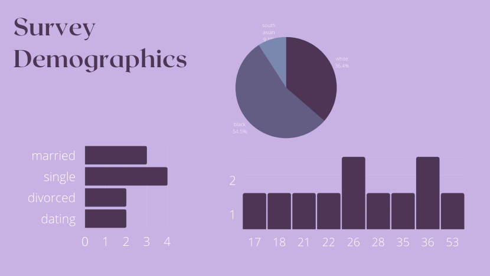
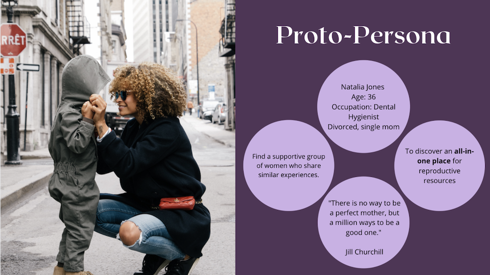
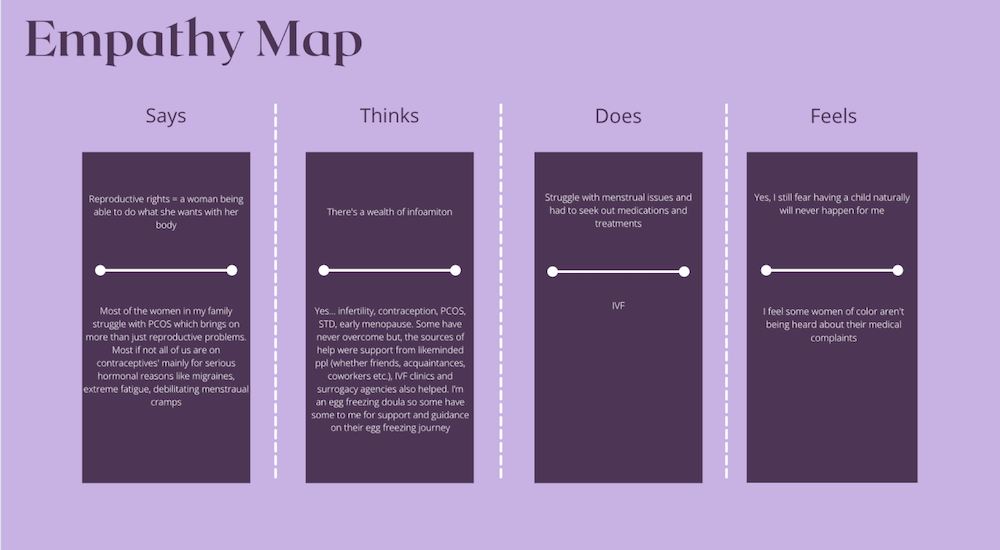
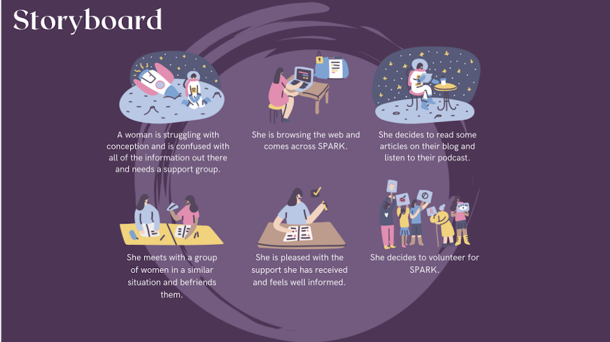
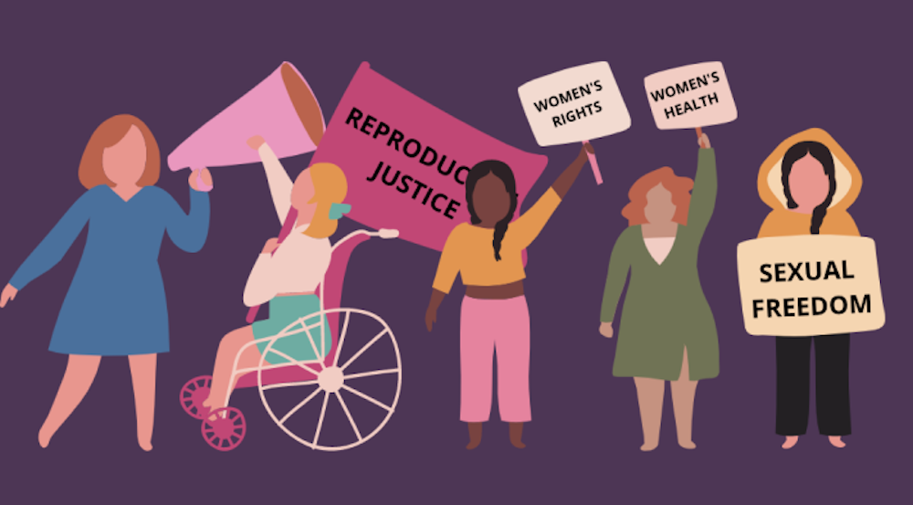
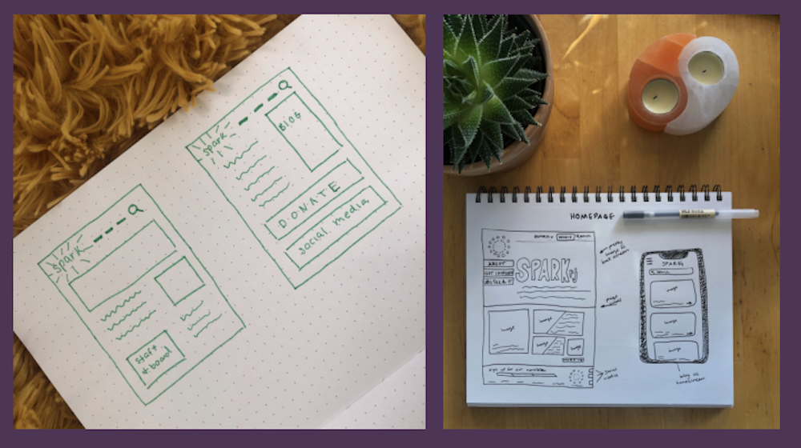
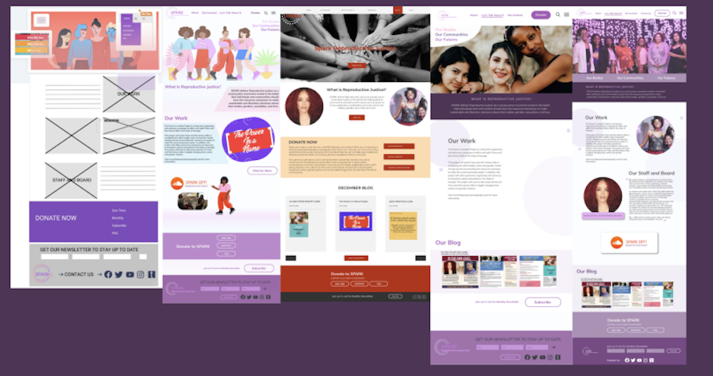
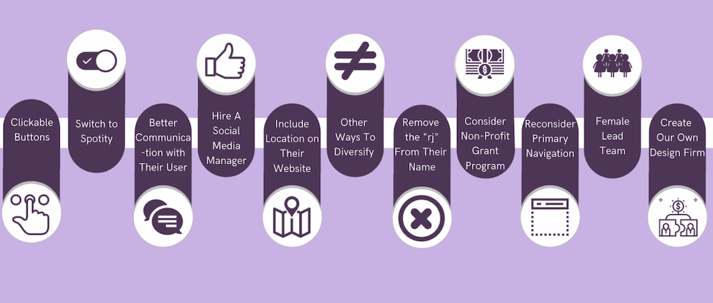

Project Overview

Project Scope: 4 weeks
Project Type: Group
Role: UX Research, UI Design, Usability Testing
Tools: Paper, Figma, Miro, Trello, Canva, Whimsical
SPARKRJ is an Atlanta based nonprofit that focuses on informing and educating women and people in the LGBTQ+ community on their rights and the pressing issues that they face. As a team of all women, we felt a personal connection to the topic of reproductive rights. We spent the next four weeks breaking down and rebuilding the website from scratch to provide a user experience that is both comforting and easy to navigate.
The Challenge & Solution

The Challenge
SparkRJ was created on the basis of offering educational information to women and people in the LGBTQ+ community about fertility and reproductive rights. We have observed that the website isn't clear on it's purpose, which is causing these individuals to not have the necessary information they need to move forward.
The Solution
We believe that creating a web design that is clear on informing and advocating for women and LGBTQ+ rights will result in a large percentage of people feeling educated about their rights and reproductive justice as it relates to their bodies.

Phase One: User Research
Key Questions - Are you familiar with your reproductive rights in the state of Georgia? - Do you know where to go to get information on fertility?
Due to the the subject of fertility and reproductive rights, we decided to go with a survey instead of personal interviews to offer comfort and anonymity to the users. We created the surveys in order to get a better understanding of the problem. The survey was taken by 15 individuals ages ranging from 17 to 53, The responses were collected in the form of short answer and multiple choice and then out into a graph to get more insights at an early stage

Phase 2: Definition & Synthesis
From the survey results we created our Proto-Persona, a 36 year old single mom named Natalia Jones. Natalia is searching for a non-profit that will educate her on fertility and be a one stop destination for reproductive resources. Natalia’s story helps me better understand what a potential user would be looking for and how they would navigate through the site.
 To uncover other areas of opportunities for improvement with SPARKRJ.com webpage we decided to use an empathy map as well as creating a storyboard. Mapping these out helped us visualize the steps users take in order to accomplish a certain goal. During the process, we analyzed each step to see where opportunity lied and how the user experience could be improved.

Phase 3: Ideation
User Insight
Natalia Jones is an advocate for women's rights, women's health, and sexual freedom. She needs to join a group of like minded individuals to help raise awareness and educate female reproductive rights because she is trying to take all the necessary measures needed to stay aware of all the issues that she may need to communicate within her intimate relationship.
Cardsorting

Card sorting played a vital role in our ideation phase. The problem defined was centered around the lack of organization in the top navigation bar and incorrect placement of secondary tabs. The original SparkRJ webpage was flooded with unnessesary secondary and tertiary tabs, proving very difficult for the user to reach their goal. The card sorting process allowed my team to completely break down and build back up the navigation in a way that offers clarity to the user.
Phase 4: Prototyping
Initial Sketches
Before my team and I moved forward with designed in figma we decided to sketch out wireframes on paper to get an idea of the direction we wanted to go with lo-fidelity prototypes.
Design Phases
Our protoypes went through many rounds of iteration before deciding on a color pallete and design we were happy with.
Call To Action
Duis aute irure dolor in reprehenderit in voluptate velit esse cillum dolore eu fugiat nulla pariatur. Excepteur sint occaecat cupidatat non proident, sunt in culpa qui officia deserunt mollit anim id est laborum.
Phase 5: User Testing
We recruited a group of people to test our prototype. The users were all told to complete the same goal, we wanted to see if they were able to sign up to volunteer with Spark.
Objectives of User Testing
- -How easily users were able to navigate the homepage
- -How easily users were able to reach the volunteer form
- -How does the overall experience feel
- -Overall thoughts on the homepage/design
- -What improvements need to be made.
Results
- Users were successfully able to locate and complete the volunteer form. Feedback for the design was overall positive- we went back and iterated some of the buttons and organization to make it more cohesive.
Phase Six: Conclusion
Whats next for Spark?
After completing the design process we were able to successful create an appealing and cohesive design that appeals to the brand as well as re-organize the navigation for a user optimized experience.
